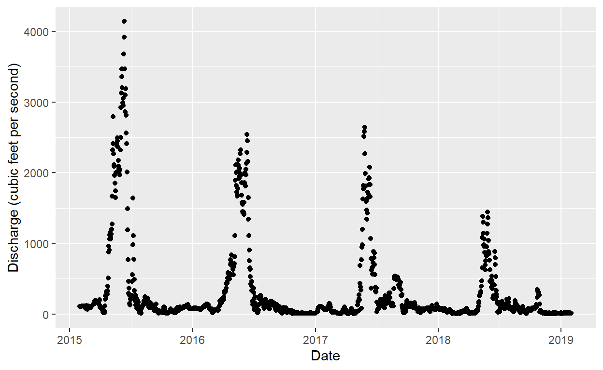
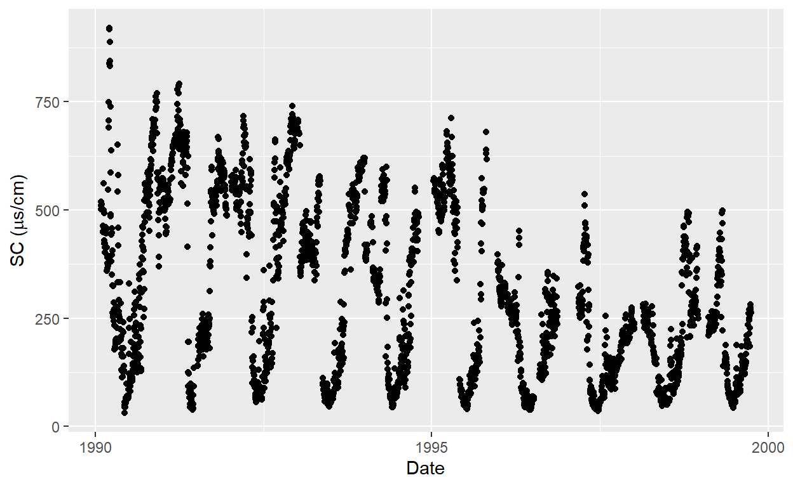
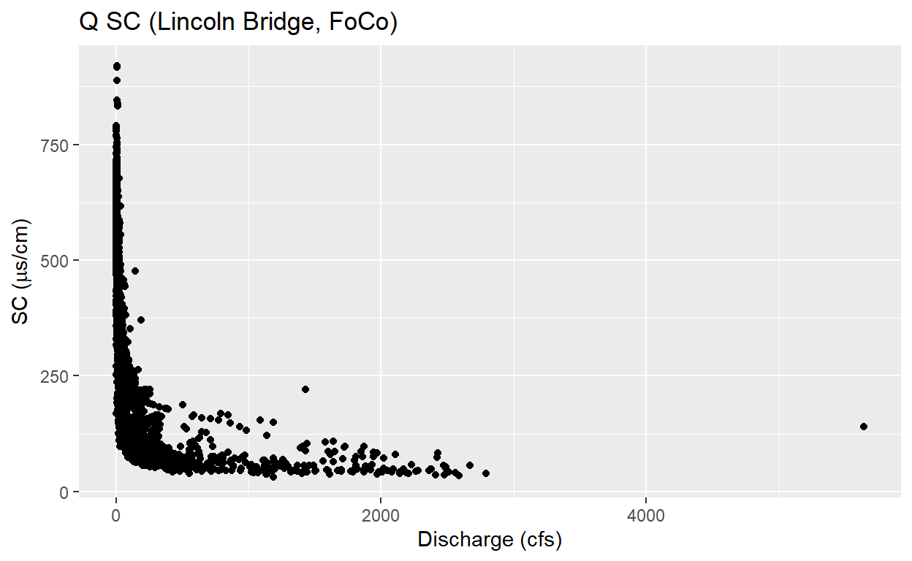
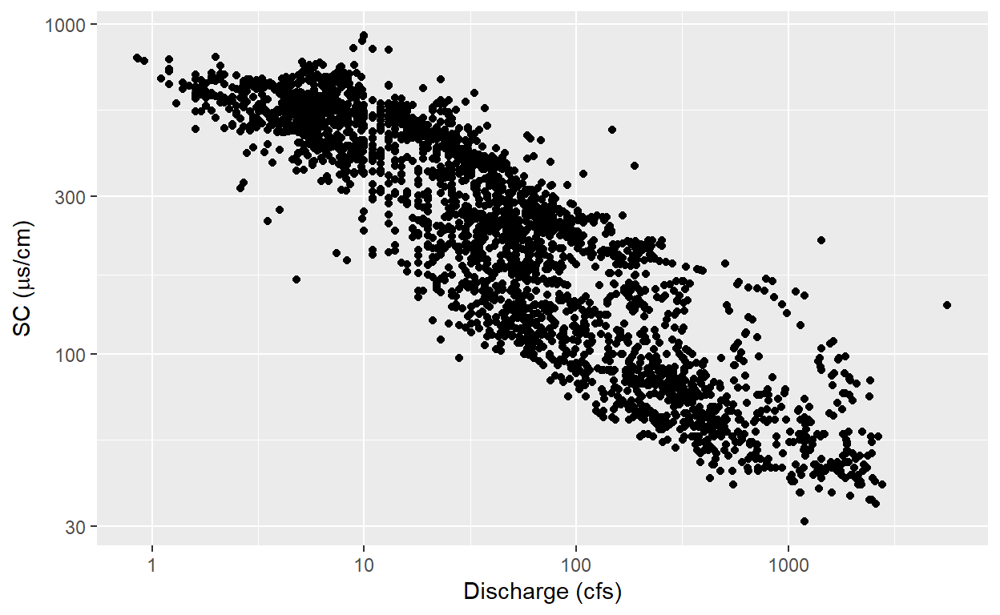

The first thing we need to do to start looking at public datasets is to load important packages that will help us easily download the data, manipulate it’s shape, and visualize it. For now we will be using specific packages that you should be aware exist, but you won’t know their full functionality and that is totally fine.
library(learnr) #The package that makes this tutorial run
library(tidyverse) #A meta-package,dplyr, readr, and more. All of which help shape and visualize data
library(dataRetrieval) #A package for pulling USGS data from the internet
library(sf) # A package for plotting spatial data (you won't use this here, but I do to show where the data is)
library(mapview) #A package for making interactive mapsOne major difference compared to downloading data from a website verses working with data from a coding environment like R is that it may seem initially more difficult to actually see where you data is coming from. This may be true early on, but we will build capacity so that before you ever download data you can actually see what you are downloading first.
To do this we will use the dataRetrieval package and sf and mapview to download site information, convert it to a spatial object, and map it out. For now we will focus on looking at sites with discharge data. Later we will pair this data with water quality information. The USGS uses parameter codes with seemingly arbitrary numeric strings to indicate specific data types. Here, the parameter Code 00060 indicates discharge data. We use this website to find out the county code for Larimer county.
larimer <- whatNWISsites(parameterCd='00060',countyCd='08069')There are many commands that help you look at your data these include: str,View,head,names and more. Run the code below to see what head returns. What about str?
larimer <- whatNWISsites(parameterCd='00060',countyCd='08069')
head(larimer)We won’t work with spatial data too much in this class, but the code below is at least a minimal example of how to plot your data so you can see what sites you are looking at. From the above code chunk we can see that there are two columns with spatial information dec_lat_va and dec_long_va. These indicate spatial data stored as decimal degrees. We can use this data to convert this data.frame into a sf object which acts a lot like a .shp file. The command we use to do this conversion is st_as_sf.
The function st_as_sf takes specific commands for this conversion to work this includes x which is our data.table larimer. Next it needs to know the columns that hold coordinate information in x,y order so that is dec_long_va and then dec_lat_va. Finally it needs to know the projection system used by our data. I happen to know that this system is WGS84 which has the shorthand EPSG:4326. Once we have turned the data into a Simple Feature spatial object, we can plot it using mapview
larimer.spatial <- st_as_sf(larimer,coords=c('dec_long_va','dec_lat_va'),crs=4326)
mapview(larimer.spatial)Hint: the county code for Boulder is 08013
#Start hereNow that we can see the location of USGS gauging stations on our maps we can pull discharge data for any of those gauging stations in the map. You can see the station id by clicking on a point and looking at the site_no column. I’ll use the station at Lincoln street (near Odell brewing co), with station id: 06752260. Do get the data for this site we will once again use the dataRetrieval package but this time we are going to use a different function. First one called whatNWISdata that will return a dataset that summarizes available data for the gauge.
available <- whatNWISdata(sites='06752260',
parameterCd='00060')
str(available)## 'data.frame': 2 obs. of 24 variables:
## $ agency_cd : chr "USGS" "USGS"
## $ site_no : chr "06752260" "06752260"
## $ station_nm : chr "CACHE LA POUDRE RIVER AT FORT COLLINS, CO" "CACHE LA POUDRE RIVER AT FORT COLLINS, CO"
## $ site_tp_cd : chr "ST" "ST"
## $ dec_lat_va : num 40.6 40.6
## $ dec_long_va : num -105 -105
## $ coord_acy_cd : chr "5" "5"
## $ dec_coord_datum_cd: chr "NAD83" "NAD83"
## $ alt_va : chr " 4940" " 4940"
## $ alt_acy_va : chr " 10" " 10"
## $ alt_datum_cd : chr "NGVD29" "NGVD29"
## $ huc_cd : chr "10190007" "10190007"
## $ data_type_cd : chr "dv" "uv"
## $ parm_cd : chr "00060" "00060"
## $ stat_cd : chr "00003" NA
## $ ts_id : num 17702 211058
## $ loc_web_ds : chr NA NA
## $ medium_grp_cd : chr "wat" "wat"
## $ parm_grp_cd : chr NA NA
## $ srs_id : num 1645423 1645423
## $ access_cd : num 0 0
## $ begin_date : Date, format: "1975-04-08" "1987-12-31"
## $ end_date : Date, format: "2020-08-27" "2020-08-28"
## $ count_nu : num 16579 11929
## - attr(*, "comment")= chr [1:41] "#" "#" "# US Geological Survey" "# retrieved: 2020-08-28 18:34:33 -04:00\t(caas01)" ...
## - attr(*, "queryTime")= POSIXct[1:1], format: "2020-08-28 16:34:33"
## - attr(*, "url")= chr "https://waterservices.usgs.gov/nwis/site/?seriesCatalogOutput=true&sites=06752260¶meterCd=00060&format=rdb"
## - attr(*, "header")=List of 12
## ..$ date : chr "Fri, 28 Aug 2020 22:34:32 GMT"
## ..$ server : chr "Apache-Coyote/1.1"
## ..$ strict-transport-security : chr "max-age=31536000"
## ..$ vary : chr "Accept-Encoding"
## ..$ content-encoding : chr "gzip"
## ..$ content-type : chr "text/plain;charset=UTF-8"
## ..$ cache-control : chr "max-age=900"
## ..$ expires : chr "Fri, 28 Aug 2020 22:49:33 GMT"
## ..$ x-ua-compatible : chr "IE=edge,chrome=1"
## ..$ access-control-allow-origin: chr "*"
## ..$ x-frame-options : chr "deny"
## ..$ transfer-encoding : chr "chunked"
## ..- attr(*, "class")= chr [1:2] "insensitive" "list"#Your site analysis hereNow that you know when data is available and what types you can download it. Here you need to know a key idea which is how often do you want to download the data. The column data_type_cd from our whatNWISdata function call should return a few choices. Things like iv for instantaneous values or dv for daily values. For today we will just use dv and the function readNWISdata to finally directly read in gauge discharge data
q.data <- readNWISdata(sites='06752260',
service='dv',
parameterCd='00060',
startDate='2015-02-01',
endDate='2019-01-31')
str(q.data)## 'data.frame': 1461 obs. of 6 variables:
## $ agency_cd : chr "USGS" "USGS" "USGS" "USGS" ...
## $ site_no : chr "06752260" "06752260" "06752260" "06752260" ...
## $ dateTime : POSIXct, format: "2015-02-01" "2015-02-02" ...
## $ X_00060_00003 : num 108 101 101 109 108 110 111 114 113 115 ...
## $ X_00060_00003_cd: chr "A" "A" "A" "A" ...
## $ tz_cd : chr "UTC" "UTC" "UTC" "UTC" ...
## - attr(*, "url")= chr "https://waterservices.usgs.gov/nwis/dv/?sites=06752260¶meterCd=00060&startDT=2015-02-01&endDT=2019-01-31&fo"| __truncated__
## - attr(*, "siteInfo")='data.frame': 1 obs. of 13 variables:
## ..$ station_nm : chr "CACHE LA POUDRE RIVER AT FORT COLLINS, CO"
## ..$ site_no : chr "06752260"
## ..$ agency_cd : chr "USGS"
## ..$ timeZoneOffset : chr "-07:00"
## ..$ timeZoneAbbreviation: chr "MST"
## ..$ dec_lat_va : num 40.6
## ..$ dec_lon_va : num -105
## ..$ srs : chr "EPSG:4326"
## ..$ siteTypeCd : chr "ST"
## ..$ hucCd : chr "10190007"
## ..$ stateCd : chr "08"
## ..$ countyCd : chr "08069"
## ..$ network : chr "NWIS"
## - attr(*, "variableInfo")='data.frame': 1 obs. of 7 variables:
## ..$ variableCode : chr "00060"
## ..$ variableName : chr "Streamflow, ft³/s"
## ..$ variableDescription: chr "Discharge, cubic feet per second"
## ..$ valueType : chr "Derived Value"
## ..$ unit : chr "ft3/s"
## ..$ options : chr "Mean"
## ..$ noDataValue : logi NA
## - attr(*, "disclaimer")= chr "Provisional data are subject to revision. Go to http://waterdata.usgs.gov/nwis/help/?provisional for more information."
## - attr(*, "statisticInfo")='data.frame': 1 obs. of 2 variables:
## ..$ statisticCd : chr "00003"
## ..$ statisticName: chr "Mean"
## - attr(*, "queryTime")= POSIXct[1:1], format: "2020-08-28 16:34:34"#Download your data hereWhen retrieving data from a large database like the NWIS servers you may find that you download column names that are very verbose, confusing, long or unclear. That is because databases like NWIS need to make sure that every possible parameter has clear documentation and can be separated from other similar parameters. For example discharge data can be recorded in cfs (cubic feet per second) or cms (cubic meters per second) and those different units will have different parameter codes. Here the column labeled : 00060_00003 indicates discharge data recorded in cfs. You can see this from the attribute table returned from the str call above.
Having opaque and confusing column names like 00060_00003 makes working with your data harder so we will rename the data and then plot it. You may notice %>% in my code. These so-called “Pipes” simply push the results of one command to the next line. It helps keep code clear and readable. I’m also going to filter out any data with discharge < 0 using the filter command
clean.q <- q.data %>%
dplyr::rename(q.cfs=X_00060_00003) %>%
filter(q.cfs >= 0)For this exercise we will use the ggplot2 library to plot the data. ggplot2 is an excellent plotting library with it’s own unique syntax that we won’t dive deeply into, but there is a ton of help on the interwebs for learning ggplot.
ggplot(clean.q,aes(x=dateTime,y=q.cfs)) +
geom_point() +
xlab('Date') +
ylab('Discharge (cubic feet per second)')
library(dygraphs)
clean.q %>%
select(dateTime,q.cfs) %>%
xts::xts(.,order.by=.$dateTime) %>%
dygraph(.)Because of the way this tutorial works, none of your own objects are saved. So the data you downloaded above has not been saved. You will need to copy and paste your site download code here, use the cleaning code to change the column names, and finally plot the data.
This is a water quality class after all. All of the same architecture we used for the above analysis can be used to reproduce water quality data. Here we’ll focus on using the same commands from above but changing the parameterCd from 00060 for discharge to 00095 for specific conductance. Specific conductance (SC) is a measure of the total ion strength in water, or salinity. SC data is far less common than discharge data, so first let’s check if it’s available at the Lincoln bridge site.
sc.available <- whatNWISdata(sites='06752260',
parameterCd='00095')
head(sc.available)We know data is available, but it ends in 2017. Let’s download it all and see how much data we get back
sc.data <- readNWISdata(sites='06752260',
service='dv',
parameterCd='00095',
startDate='1990-02-01',
endDate='2019-01-31')
tail(sc.data)From that data it doesn’t look like we have daily values beyond 1999. What does the data time series look like? Here we will follow the same procedure from above, but the column we are renaming has changed
clean.sc <- sc.data %>%
dplyr::rename(sc.uscm=X_00095_00003) %>%
filter(sc.uscm >= 0)
ggplot(clean.sc,aes(x=dateTime,y=sc.uscm)) +
geom_point() +
xlab('Date') +
ylab(expression(paste('SC (',mu,'s/cm)')))
There are some interesting seasonal patterns here, some questions you might ask when you see these patterns:
To start to explore these ideas we can join the discharge data to the SC data. Unfortunately our Q data doesn’t cover the same time as the sc data. So we’ll have to redownload it and then use a command called inner_join that will join the two datasets together when both Q and SC were recorded on the same day.
What do you think the functions left_join, right_join, and outer_join do?
q.data.90s <- readNWISdata(sites='06752260',
service='dv',
parameterCd='00060',
startDate='1990-02-01',
endDate='2000-01-31') %>%
dplyr::rename(q.cfs=X_00060_00003) %>%
filter(q.cfs >= 0)
q.sc <- q.data.90s %>%
inner_join(clean.sc,by='dateTime')
head(q.sc)Now we have a dataset with both q and sc data and we can plot Q on the x axis and SC on the y axis to look if Q predicts Sc in anyway
ggplot(q.sc,aes(x=q.cfs,y=sc.uscm)) +
geom_point() +
ggtitle('Q SC (Lincoln Bridge, FoCo)') +
xlab('Discharge (cfs)') +
ylab(expression(paste('SC (',mu,'s/cm)')))
That doesn’t show a lot of detail because Q varies so much in the time series. Let’s plot both sc and Q as log10 axes
ggplot(q.sc,aes(x=q.cfs,y=sc.uscm)) +
geom_point() +
scale_x_log10() +
scale_y_log10() +
xlab('Discharge (cfs)') +
ylab(expression(paste('SC (',mu,'s/cm)')))
This may take some exploring, but find another station that has some Q and SC data (more than 500 observations of each) using sites in the map above. Check that the date for available data matches your downloading code, download no more than 5 years of Q and SC data. Pair these datasets together and plot the data with Q on x axis and SC on the Y axis.
Grab a screenshot of this plot (with correctly labeled axes, see code above) and submit it with a paragraph (in a docx or gdoc or pdf) explaining:
#Does the available data match your code for downloading the data?
#Is that true for both the Q and SC data?
sc.available <- whatNWISdata(sites='06752260',
parameterCd='00095')
head(sc.available %>%
select(begin_date,end_date,count_nu))#For most sites you will need to check for matching dates and then change the
#code that downloads the data to match those dates ()
q.data <- readNWISdata(sites='06752260',
service='dv',
parameterCd='00060',
startDate='1990-02-01', #CHANGE THE DATE IF NEEDED
endDate='2000-01-31')
## You'll have to change the dat for both the Q and SC data.